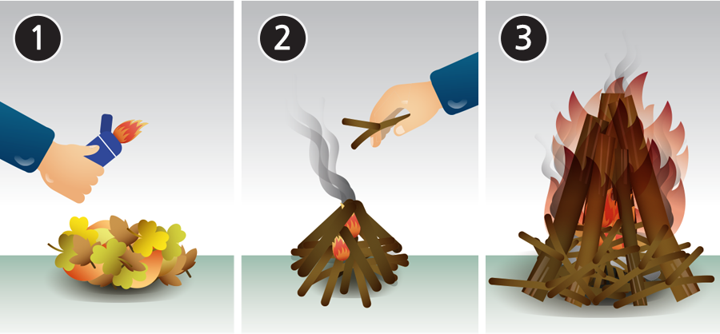
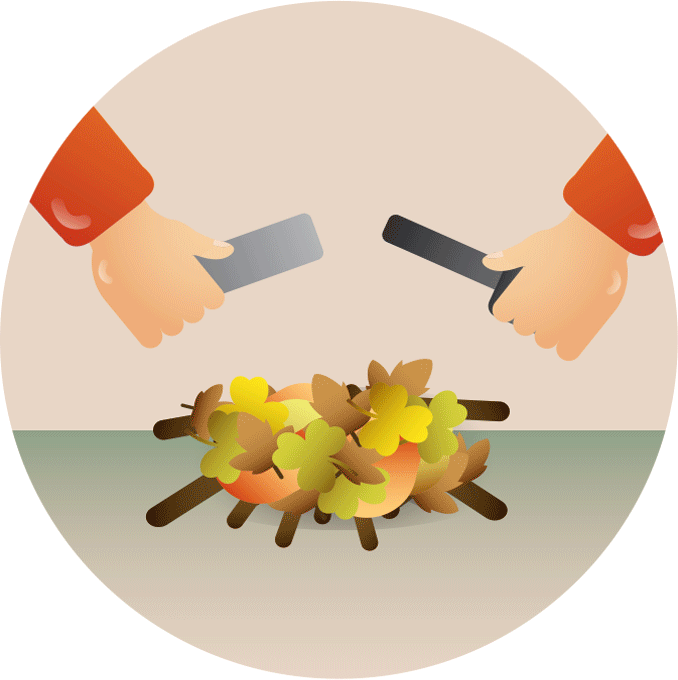
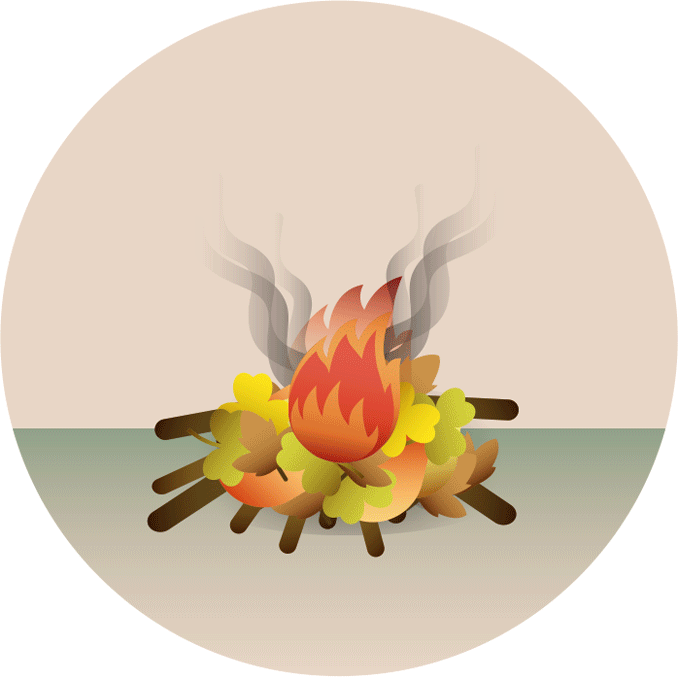
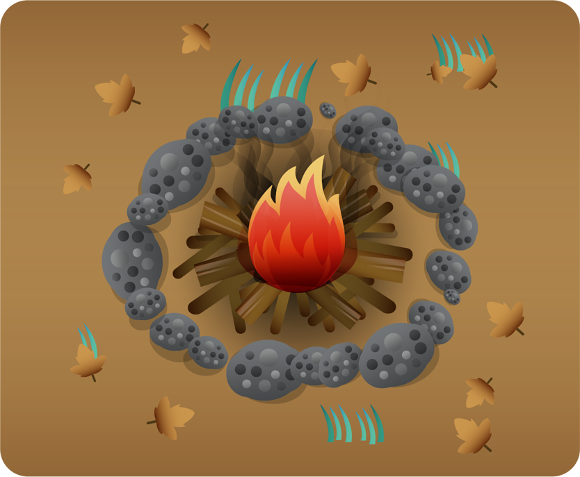
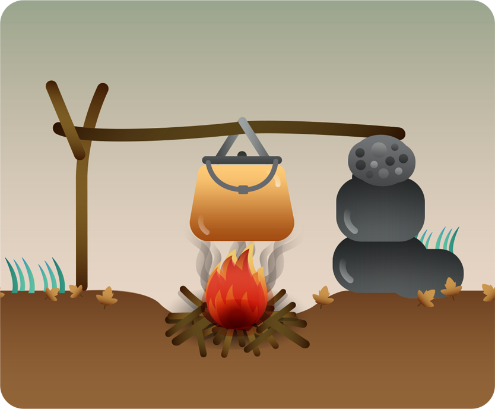

큰 나뭇가지에 처음부터 불이 잘 붙지 않으므로 부싯깃 > 불쏘시개 > 장작 순서로 불을 키워가야 합니다.

(1) 부싯깃 : 낙엽, 얇게 벗긴 나무껍질, 종이, 솜, 지푸라기 등
(2) 불쏘시개 : 작고 가는 잔가지
(3) 장작 : 천천히 오래 타는 큰 나뭇가지
마른 풀과 나뭇가지를 크기 별로 따로 모읍니다. 기온이 떨어지고 어두워진 후에 주우러 다니지 않도록 해가 지기 전에 준비를 마쳐야 합니다.
젖은 땅에는 미리 돌이나 마른 장작을 깔아 습기가 없는 플랫폼을 만들고 시작합니다.
부싯깃에 라이터나 성냥, 플린트로 불을 붙입니다.

부싯깃은 불이 잘 붙지만 금방 타버립니다.
재빨리 잔가지를 얹어 불씨를 키웁니다.
잔가지의 양을 늘리고 점점 큰 나뭇가지를
얹어 불이 옮겨 붙게 합니다.
그 위로 연료장작(큰 나뭇가지)을 원뿔 모양이나 격자 층으로 쌓습니다. 불을 완전히 덮지 않고 간격을 두어 공기가 통하도록 합니다.
건조하거나 낙엽이 많은 지대에서는 불이 잘못 번지지 않도록 조심해야 합니다. 미리 돌을 둘러쌓아 화로를 만들거나 구덩이를 이용하면 바람을 막아 불이 꺼지지 않게 하고 음식을 데우는 데도 유리합니다.
